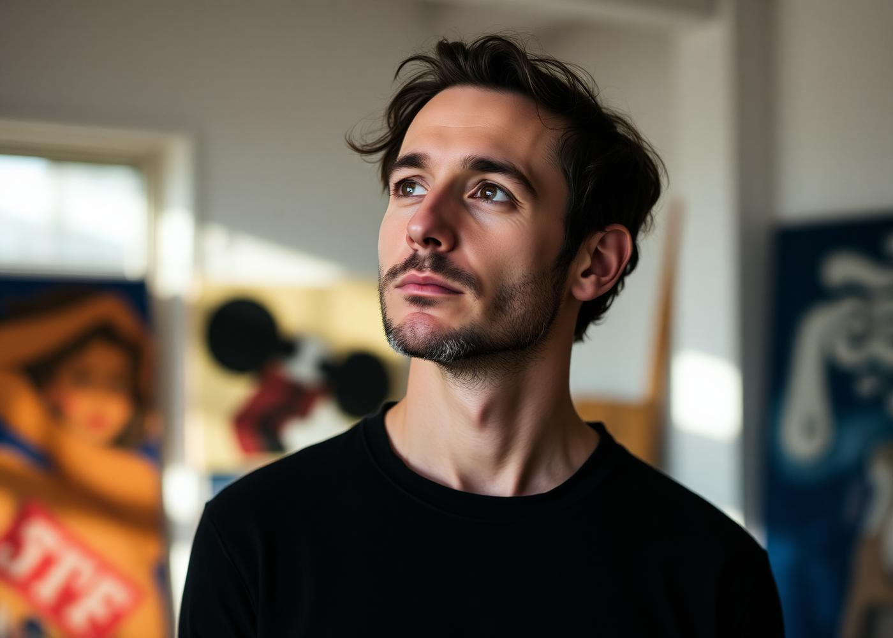

about
Dominique Rey is a French-Canadian visual artist working in photography, film, and sculpture. Performance and the body are central to her practice, and she utilizes modes of fragmentation to explore the self within contemporary experiences of disorientation and dislocation.
Her ongoing project MOTHERGROUND attempts to unravel the myriad transformations of early motherhood, the relentless balance and imbalance at stake, and the oscillation between extreme emotional states, from agony to ecstasy.
Her work has been exhibited throughout Europe, the United States, and Canada, including at the National Gallery of Canada, Museum of Contemporary Art Toronto, Remai Modern, Plug In ICA, Winnipeg Art Gallery, and Museum London. She is the recipient of numerous awards and grants, including support from the Canada Council for the Arts and the Manitoba Arts Council.